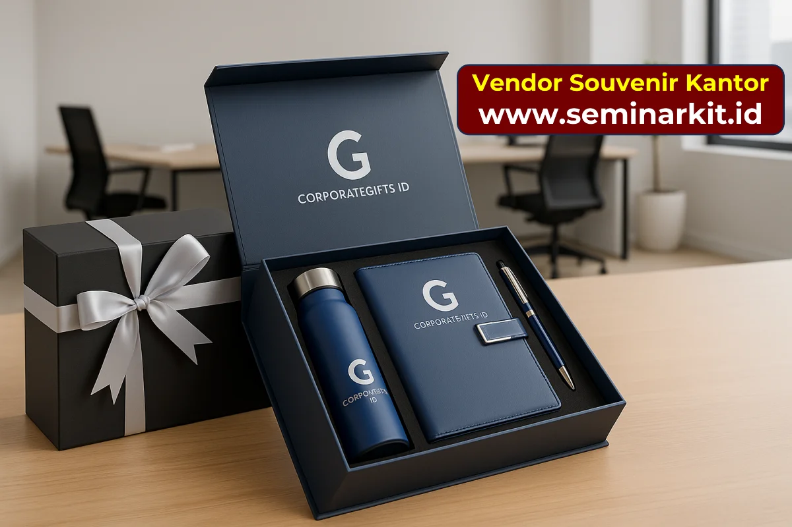

Corporate gift Kediri menjadi bagian penting dalam strategi relasi bisnis perusahaan. Gift yang tepat mampu menunjukkan apresiasi, memperkuat hubungan kerja, dan menjaga top-of-mind brand di mata mitra.
Prinsip Memilih Corporate Gift yang Tepat
Corporate gift tidak harus paling mahal, tetapi harus relevan, berkualitas, dan representatif terhadap citra perusahaan.

- Relevan dengan profil penerima dan konteks hubungan bisnis.
- Kualitas material baik agar gift benar-benar dipakai.
- Branding tidak berlebihan namun tetap terlihat profesional.
- Packaging rapi untuk memperkuat kesan premium.
Opsi Corporate Gift Premium untuk Kediri
| Kategori | Contoh Produk | Konteks Penggunaan |
|---|---|---|
| Gift eksekutif | Tumbler premium + notebook + pen metal | Klien utama dan manajemen partner |
| Gift relasi reguler | Notebook + mug/tumbler + pouch | Mitra bisnis aktif |
| Gift event bisnis | Merchandise branded dalam box | Gathering dan forum relasi |
Packaging dan Personalisasi
Untuk program B2B, packaging yang baik sering kali menentukan impresi pertama penerima. Personalisasi nama penerima juga meningkatkan nilai emosional gift.
- Box eksklusif dengan insert rapi
- Kartu ucapan bisnis yang sopan dan personal
- Label nama penerima untuk gift prioritas
- Finishing branding yang halus dan profesional
Strategi Eksekusi Program Corporate Gift
- Tentukan tier penerima: reguler, prioritas, dan VIP.
- Sesuaikan paket per tier agar budget lebih efisien.
- Lakukan approval sample untuk setiap kategori utama.
- Susun jadwal distribusi sesuai momen apresiasi.


Banner promosi: klik gambar untuk langsung terhubung ke WhatsApp tim sales.
FAQ Seputar Topik Ini
Budget ideal corporate gift untuk klien VIP berapa?
Tergantung tujuan program, umumnya berada di tier menengah hingga premium agar tetap representatif.
Apakah bisa menambahkan nama penerima pada gift?
Bisa untuk produk tertentu seperti engraving atau cetak personalisasi.
Produk apa yang paling aman untuk corporate gift B2B?
Produk fungsional seperti tumbler premium, notebook, pen metal, dan paket gift box masih paling aman.
Apakah bisa pengiriman bertahap ke beberapa penerima?
Bisa. Distribusi dapat disesuaikan per gelombang atau prioritas penerima.